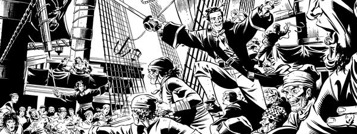

The tempting comparison is with Pirates of the Caribbean, but this tale of swashbuckling adventure was blending it's mythology into the age of sail a full year prior to The Curse of the Black Pearl, so perhaps owes more to The 7th Voyage of Sinbad and global mythology in general.
Swinging into action a little later than long-runners Sinister Dexter and Nikolai Dante, the adventures of Captain Jack Sparrow Dancer served as another strong long-running strip demonstrating 2000 AD's return to strength in the new millenium.
Edginton's "Wheel of Worlds" multiverse has several narrative links here. Professor Toten also exists in the world of Ampney Crucis. The martians of Scarlet Traces (first of War of the Worlds) show up here, and the villainous Professor Orlando Doyle is mirrored by a more studious and helpful version that lives in the world of Stickleback, manning their version of the Temple of Mithras.
Art by Steve Yeowell
| Story Title | Parts | Pages | w indicates a wraparound coverCovers | Year(s) | Issues | Writer | Artist | Colourist | Letterer |
|---|---|---|---|---|---|---|---|---|---|
| Under the Banner of King Death | 9 | 60 | 1317: Steve Yeowell & Chris Blythe 1321: Steve Yeowell & Chris Blythe 2 | 2002 | 1313-1321 | Ian Edginton | Steve Yeowell | [b&w] | Annie Parkhouse |
| Twilight of the Idols | 10 | 60 | 1373: Steve Yeowell & Chris Blythe 1379: Steve Yeowell & Chris Blythe 2 | 2003-2004 | p2004, 1371-1379 | Ian Edginton | Steve Yeowell | [b&w] | Annie Parkhouse |
| Meanwhile… | 4 | 20 | 1418: Steve Yeowell 1 | 2004 | 1416-1419 | Ian Edginton | Steve Yeowell | [b&w] | Annie Parkhouse |
| Underworld | 9 | 60 | 1460: Steve Yeowell 1468: Steve Yeowell 2 | 2005 | 1460-1468 | Ian Edginton | Steve Yeowell | [b&w] | Ellie de Ville |
| The Hollow Land | 9 | 70 | 1491: Jim Murray 1498: Frazer Irving 2 | 2006 | 1491-1499 | Ian Edginton | Steve Yeowell | [b&w] | Annie Parkhouse |
| With a Bound He Was Free… | 5 | 25 | 1513: Arthur Ranson 1 | 2006 | 1513-1517 | Ian Edginton | Steve Yeowell | [b&w] | Ellie de Ville |
| War Stories | 5 | 25 | 1565: Steve Yeowell & Chris Blythe 1 | 2007 | 1562-1566 | Ian Edginton | Steve Yeowell | [b&w] | Simon Bowland |
| Old Gods | 10 | 60 | 1602: Steve Yeowell & Chris Blythe 1609: Steve Yeowell & Chris Blythe 2 | 2008 | 1600-1609 | Ian Edginton | Steve Yeowell | [b&w] | Ellie de Ville |
| Signs and Portents | 8 | 40 | 0 | 2008-2009 | p2009, 1617-1623 | Ian Edginton | Steve Yeowell | [b&w] | Ellie de Ville |
| The Chimes at Midnight | 6 | 30 | 1644: Steve Yeowell & Chris Blythe 1648: Steve Yeowell & Chris Blythe 2 | 2009 | 1644-1649 | Ian Edginton | Steve Yeowell | [b&w] | Simon Bowland |
| Hell and High Water | 12 | 70 | 1688: Steve Yeowell (P) & Chris Blythe (C) 1691: Clint Langley 1699: Boo Cook 3 | 2010 | 1688-1699 | Ian Edginton | Steve Yeowell | [b&w] | Annie Parkhouse |
| Gods and Monsters | 12 | 70 | 1728: Steve Yeowell 1736: Cliff Robinson (P) & Dylan Teague (C) 2 | 2011 | 1728-1739 | Ian Edginton | Steve Yeowell | [b&w] | Ellie de Ville |
| Beautiful Freak | 5 | 25 | 0 | 2012 | 1792-1796 | Ian Edginton | Steve Yeowell | [b&w] | Ellie de Ville |
| Fire Across the Deep | 12 | 70 | 1816: [w] Clint Langley 1823: Steve Yeowell (P) & Abigail Ryder (C) 1,1w | 2012-2013 | p2013, 1813-1823 | Ian Edginton | Steve Yeowell | [b&w] | Annie Parkhouse |
Linked to Ant Wars No supertitle.The Red Seas vs. Ant Wars | 1 | 10 | 0 | 2020 | SFS25 | Ian Edginton | Steve Yeowell | [b&w] | Jim Campbell |
| >> Posters / Teasers << | |||||||||
| Hell and High Water | 1 | 1 | 0 | 2009 | p2010 | n/a | Steve Yeowell | <-- | n/a |
| year | episodes | pages |
| 2000 | 0 | 0 |
| 2001 | 0 | 0 |
| 2002 | 9 | 60 |
| 2003 | 1 | 10 |
| 2004 | 13 | 70 |
| 2005 | 9 | 60 |
| 2006 | 14 | 95 |
| 2007 | 5 | 25 |
| 2008 | 11 | 65 |
| 2009 | 13 | 65 |
| 2010 | 12 | 70 |
| 2011 | 12 | 70 |
| 2012 | 6 | 35 |
| 2013 | 11 | 60 |
| 2014 | 0 | 0 |
| 2015 | 0 | 0 |
| 2016 | 0 | 0 |
| 2017 | 0 | 0 |
| 2018 | 0 | 0 |
| 2019 | 0 | 0 |
| 2020 | 1 | 10 |
| 2021 | 0 | 0 |
| 2022 | 0 | 0 |
Comic strip data (excludes other content):